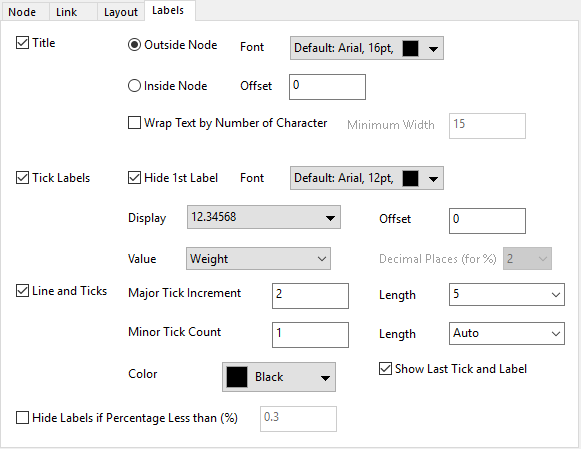

Diese Registerkarte kann verwendet werden, um alle Arten von Beschriftung in einem Sehnendiagramm zu definieren.

Legen Sie fest, wie die Titel für alle Knoten gezeigt werden sollen.
Legen Sie fest, wie die Titel außerhalb bzw. innerhalb der Knoten, mit oder ohne Versatz, gezeigt werden sollen.
Legen Sie die Schriftart und das Format für den Titeltext fest.
Legen Sie fest, ob der Text umgebrochen werden soll, wenn der Text länger ist als die Anzahl der Zeichen, die im Feld Minimale Breite eingegeben ist.
Legen Sie fest, ob die erste Beschriftung (der Anfangspunkt der Hilfsstrichsbeschriftung ist zumeist 0) für alle Knoten verborgen werden soll.
Legen Sie die Schriftart und das allgemeine Format für die Titelbeschriftungen fest.
Legen Sie das numerische Format sowie Präfix und Suffix für die Beschriftungen der Hilfsstriche fest.
Legen Sie den Versatz der Hilfsstrichsbeschriftungen von den Knoten aus und entlang des Radius fest. Die Einheit dieses Bedienelements ist % der Schrifthöhe.
Legen Sie fest, was als Hilfsstrichsbeschriftung angezeigt werden soll, Gewichtung, Prozent (in gesamter Gewichtung) oder beides, Gewichtung und Prozent.
Legen Sie die Dezimalstellen fest, wenn Sie Prozent für die Hilfsstrichsbeschriftungen ausgewählt haben.
Diese Bedienelementgruppe kann verwendet werden, um die Hilfsstriche benutzerdefiniert anzupassen.
Legen Sie den Wert des Inkrements für die großen Hilfsstriche fest.
Legen Sie die Länge der großen Hilfsstriche in der Einheit "Punkte" fest.
Legen Sie die Anzahl der kleinen Hilfsstriche zwischen zwei großen Hilfsstrichen fest.
Legen Sie die Länge der kleinen Hilfsstriche in der Einheit "Punkte" fest.
Legen Sie die Farbe der Linie und Hilfsstriche fest.
Legen Sie fest, ob der letzte Hilfsstrich und seine Beschriftung gezeigt werden soll. Sie können dieses Bedienelement verwenden, um den letzten Hilfsstrich und seine Beschriftungen zu verbergen, um die Überschneidung mit dem ersten Hilfsstrich des nächsten Knotens zu vermeiden.
Verbergen Sie alle Beschriftungen (Titel und Hilfsstrichsbeschriftungen) des Knotens, wenn die Prozent (in der Gesamtgewichtung aller Knoten) kleiner als ein angegebener Wert ist.